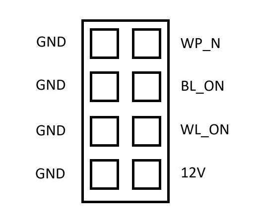
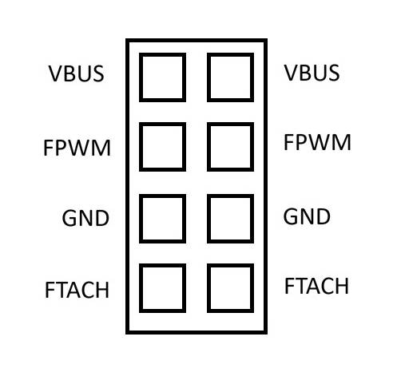

This section describes the physical characteristics and capabilities of
Smart Display Module includes the following features:
The Smart Display Module box contains the following parts:
The dimensions of the
The Smart Display Module has an SDM-L form factor. The dimensions of the main board and its components are 175 × 100 × 20 mm. Including the face plate, handle, and gold finger interface, the full dimensions of the module are 193 × 125 × 25 mm.
Alone, the Smart Display Module weighs approximately 146 g. When assembled with a CM5, heatsink, and screws, it weighs approximately 225 g. Each board is checked by the factory before it is shipped.
The Smart Display Module connects directly to a
The Intela SDM edge connector transmits the following interfaces or signals from the CM5 to the host display:
| CM5 interface | Intela SDM interface |
|---|---|
| HDMI0 | HDMI |
| USB 3.0 port 1 | USB3 |
| GPIO7/9/10/11 (SPI0) | GSPI |
| GPIO14/GPIO15 (UART0) | UART |
| GPIO2/GPIO3 (I2C1) | I2C0 (CM5 is the target) |
| GPIO38/39 (I2C0) | I2C1 (CM5 is the controller) |
| PWR_Button | Power Button |
| PMIC_Enable | Power Reset |
| GPIO5/GPIO17 | SLP_S4 |
| GPIO4 | System Fan Control |
| HDMI0_CEC | HDMI CEC |
The
On the outside of the host display, Smart Display Module exposes the following connectors:
On the inside, Smart Display Module exposes the following connectors:
On the inside, Smart Display Module also exposes the following pins on the short edge closest to the CM5.
The pins are labelled in sets of two. With the pin labels in the correct orientation, the top four pairs of pins have a ground pin on the left and an active pin on the right; the bottom four pairs of pins each have two active pins with the same function. You get a best-in-class thermal design.

Figure 1. Pinout for the top four pairs of pins

Figure 2. Pinout for the bottom four pairs of pins
| Label | CM5 pin name | Description |
|---|---|---|
| WP_N | EEPROM_nWP |
Connect the adjacent ground pin to the active pin to prevent changes to the contents of the on-board EEPROM. |
| BL_ON | BT_nDisable |
Connect the adjacent ground pin to the active pin to disable the Bluetooth functionality. |
| WL_ON | WL_nDisable |
Connect the adjacent ground pin to the active pin to disable the Wi-Fi functionality. |
| 12V | Not applicable | Power supply from the host display (12 V). Be careful not to connect the 12 V pin to a ground connection; doing so damages the board. |
| VBUS | VBUS_EN |
Signals to apply power to the external USB 3.0 port. |
| FPWM | Fan_PWM |
Drives a variety of PWM-controlled fans. |
| GND | GND |
Ground (0 V) |
| FTACH | Fan_Tacho |
Read the tachometer output signal that is present on many PWM fans. |
For more information about these pins and how to use them, see the Compute Module 5 datasheet and Compute Module 5 IO Board datasheet.